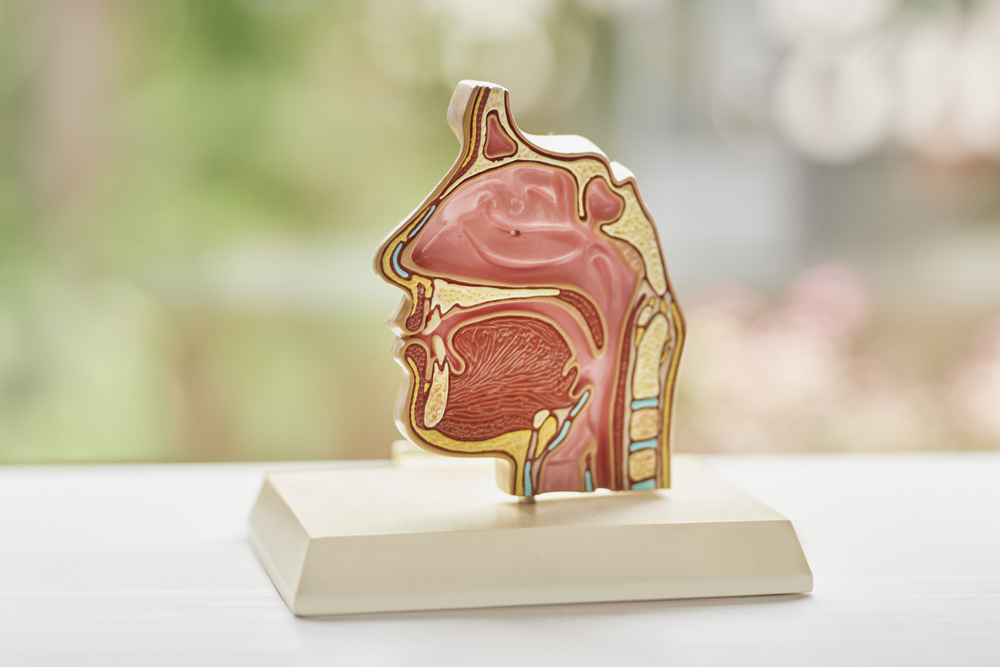

With an understanding of the root cause, an integrated myofunctional therapy treatment program, and collaboration with a team of related healthcare professionals — we begin to rebuild inherent function, form, and balance for breathing, eating, and speaking.
Orofacial myofunctional therapy (OMT) is a structured, exercise-based program that retrains the muscles of the face, mouth, and tongue. It addresses dysfunction in how we breathe, swallow, and position our tongue and lips at rest — patterns that, when incorrect, drive a wide range of symptoms including mouth breathing, sleep-disordered breathing, sleep apnea, orthodontic relapse, and speech errors.
OMT is appropriate for children and adults. It is often recommended by dentists, orthodontists, and ENTs as part of an integrated treatment plan, and is supported by a growing body of peer-reviewed research.
Unlike treatments that address symptoms in isolation, myofunctional therapy works by identifying and correcting the underlying functional patterns that give rise to those symptoms — restoring functional breathing, chewing, swallowing and speech patterns.
OMT is appropriate for children and adults of all ages presenting with mouth breathing, dysfunctional swallow patterns, tongue or lip tie, sleep-disordered breathing, TMJ issues, orthodontic relapse, or speech errors.
Sessions are typically weekly to start, reducing in frequency as you progress.
No referral is required. However, if you have been referred by a dentist, orthodontist, ENT, or physician, Lauren is happy to coordinate directly with your care team.
OMT is recognized within the scope of practice for SLPs by ASHA, and is supported by systematic reviews and meta-analyses. See the Research section for peer-reviewed citations.
The following concerns can all stem from underlying orofacial myofunctional dysfunction — and can all be addressed through a targeted OMT program.

Sagittal cross-section — nasal passage, oral cavity, tongue, and pharynx
The upper airway is a shared space. The position of the tongue at rest, the tone of the lips, the pattern of swallowing, and the habit of nasal versus mouth breathing all directly influence the size and patency of the airway — and by extension, how well we sleep, breathe, and develop structurally.
When the tongue rests low in the mouth instead of against the palate, when swallowing pushes the tongue forward rather than upward, or when breathing habitually occurs through the mouth — the muscles of the orofacial complex gradually adapt to these dysfunctional patterns. Over time this affects the face, jaw, teeth, airway, sleep, and many other systems in the body.
Myofunctional therapy retrains these patterns at their source. See the research page for peer-reviewed evidence supporting OMT for sleep-disordered breathing, tongue tie, and orthodontic outcomes.
For most clients, myofunctional therapy follows a clear three-stage structure. Please check the FAQ page for more detail on each stage.
An appointment to discuss your main concerns and goals and determine whether myofunctional therapy is the right direction. Available via telehealth or in-person.
A comprehensive myofunctional assessment completed in person at our Truckee clinic. We review your case history in depth, complete the assessment, and discuss next steps for treatment.
Evidence-based exercises, strategies, and tools — all designed to integrate into daily routines, making treatment more effective and efficient.
Myofunctional therapy works best as part of an integrated care team. Lauren collaborates regularly with the following providers to ensure treatment extends beyond the therapy room.
Primary Care Physicians · Dentists · ENTs · Orthodontists · Physical Therapists · Chiropractors · Body Workers · Craniosacral Therapists · Breathwork Practitioners · Lactation Consultants · Sleep Specialists · Pediatricians
The initial evaluation and 1–2 early treatment sessions are completed in person at our Truckee clinic. Ongoing therapy sessions are available via secure telehealth for California residents once in-person requirements have been met. See how telehealth works →
A free 30-minute consultation is the right place to start Lauren will help you determine whether myofunctional therapy makes sense for your situation, and what the next steps look like.